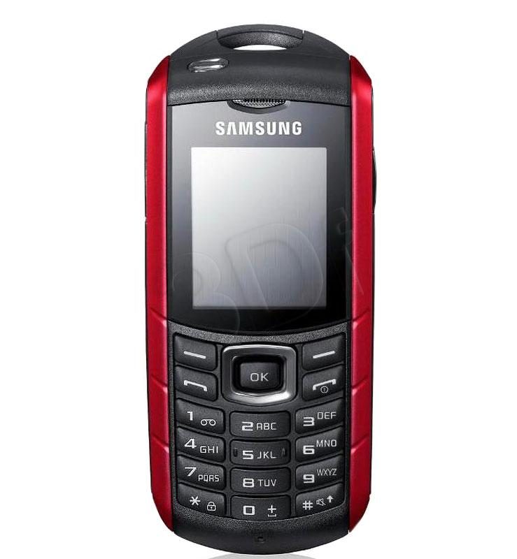

Telefon Jakuba Cichego
| Marka | Typ | Wiek |
|---|
| Samsung | Cegła | 20 |
| Apple | Ajfon 11 | 3 |
| Apple | iPhone 15 | 1 |
| Nokia | Cegła | 18 |
Przyniosłem Cichemu ładowarkę do starej około 20-letniej cegły Samsunga
Opis telefonu Cichego;
Opis produktu
Samsung E2370 SOLID to funkcjonalny telefon komórkowy Obsługiwany jest za pomocą wygodnej klawiatury. Do dyspozycji użytkownika jest 5 MB pamięci wbudowanej. Można ją powiększyć kartami pamięci. Telefon posiada wbudowany aparat fotograficzny o rozdzielczości 0,3 MPx z zoomem o 4x powiększeniu. Wbudowany odtwarzacz mp3 z powodzeniem może zastąpić przenośne sprzęty audio. Model ten posiada obsługę radia FM. Bezprzewodowe akcesoria jak np. zestawy słuchawkowe nie są dla tego modelu problemem, posiada bowiem bluetooth. Maksymalny czas rozmów w tym modelu to 20 h. Nieużywany telefon w stanie czuwania wytrzyma 43,4 dni. Gwarancja producenta obejmuje okres dwóch lat.Notepad++ v8.6.9 bug-fixes & new enhancements:
Więcej informacji na temat telefonu
specyfikacja Samsunga